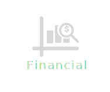

back to top
Business Diagnosis
Based on the company's industry, policy and operator philosophy, the overall business strategy is formulated. In the process, WGC will assess the human resources, financial resources, IT information, etc. required by the company to implement the strategy, and plan according to the budget of the company's scheduled investment
core value
Based on the company's industry, policy and operator philosophy, the overall business strategy is set. The process will assess the human resources, financial resources, information information, etc. Required by the company to implement the strategy, and plan according to the budget of the company's scheduled investment.
professional service
Business diagnosis
| 1、Business diagnosis | Basic management, corporate image, corporate culture, strategic planning, message management, economic benefits |
| 2.Human resource diagnosis | Organizational structure, recruitment training, performance appraisal, transfer management, benefits and rewards |
| 3.Manufacturing diagnostics | Output value production, production planning, material supply, inventory management, quality improvement, equipment management, production efficiency, job scheduling, inspection and inspection, electronic production |
| 4.Sales service diagnosis | Target strategy, contract review, customer service, advertising management, sales strategy, personnel management, access management, sales intelligence, sales electronic |
| 5.Procurement budget diagnosis | Procurement planning, budget planning, procurement information, electronic procurement, supplier management, procurement inspection |
| 6.Technical development diagnosis | Technical document management, new product planning, development process, rewards and performance, communication |
| 7.Financial management diagnosis | Accounting principles, statement preparation, missing analysis, investment management, accounts receivable, cost control, profit distribution |
| 8.Administrative system diagnosis | Document standardization, authorization system, audit system, reward and punishment system |
Training course
| Course | Course Objective | Course Target | Course Content | Course Hours |
| Crossover Innovation and Business Model Transformation | The transformation of business model is one of the four modes of enterprise innovation, and it is also an innovative means to fundamentally change the physique of enterprises. According to a report from the Global CEO Survey in recent years, two-thirds of CEOs surveyed said that business model transformation will be the key to the company's future success, and financial analysis of the companies surveyed shows that companies that value business model transformation usually Both have higher revenues. The reason is that the transformation of the business model will not only reduce costs and increase corporate flexibility. but will also "subvert the competitive landscape of the industry." Knowing business models, understanding business models and learning how to construct innovative business models to enhance the competitiveness of enterprises will be the necessary knowledge and skills for future management personnel. In recent years, it has been accompanied by "Social, Mobility, Analytics, Cloud, Internet of Things" (social, mobile Internet, big data, cloud computing and Internet of Things) information technology development and other advanced technologies, such as: manufacturing, materials technology, biology The combination of technology, energy technology, etc., this phenomenon of cross-border innovation not only opens up the vision of information personnel, but also opens up the strategic thinking of entrepreneurs "Internet +", and promotes fundamental changes in the industry model. This course will share with you how to use the tools and techniques of Blue Ocean Strategy to carry out strategic innovation of business models. And transform the results of strategic innovation output into the process and method of business model innovation, and then use the power of information technology to assist you. Enterprises grow in a fiercely competitive environment. At the end of the course, you will gain the following knowledge and skills: 1. A set of logical analysis skills to help business managers master the techniques and methods of constructing innovative models and drive enterprise change to meet the impact of the mobile Internet era. 2. A systematic methodology to help business managers understand the basic elements of business models and the processes and methods of constructing business models, so that revolutionary information technology changes can truly solve enterprise problems, and then play the role of information personnel in industrial competition. Strategic value. 3. A practical blue ocean strategy to help business managers explore how to apply Blue Ocean's strategy tools and techniques to strategically innovate existing business models to break through the current operational framework and dilemma. 4. An innovative information service model to help business managers understand how to apply IT in the real business context and to use the "Nine Palaces Canvas Methodology" to achieve the perfect combination of "Internet +" and "Innovative Methodology". | 1. Heads of enterprises at all levels 2. Marketing, business executives and personnel 3. Information project supervisors and personnel 4. The Internet + technology impacts existing business models and explores those who are interested in responding to countermeasures |
1. Introduce and practice the content and application skills of methodology in the way of life-based cases • The thinking of mobile Internet on enterprise development • The four major trends of mobile Internet technology application 2. Applying and training the canvas in the existing business model and using this technique to propose modifications and improvements to the model. • Business model transformation planning process • Introduction to the business model new generation canvas methodology 3. Discussions and exercises to propose innovative ideas for business models in a systematic, structured, and mutually challenging way. • Business model new generation canvas methodology exercises • Business model transformation in financial, organizational, marketing activities, and service considerations 4. Explore innovative planning before actual resource input • Improve the likelihood of successful new service implementation • Also ensure the effectiveness of resource investment | 14 hours |
| Course | Course Objective | Course Target | Course Content | Course Hours |
| Realizing Digital Transformation with Commercial Insights | In 2009, with the advent of the global economic crisis, global corporate leaders are facing historical problems and confusion: overnight, business activities are stagnant, and cash shortages are serious, leading to where customers go? Sales is a battle, business personnel had to face strong resistance, overcome various difficulties, and ultimately win orders. In addition, the wave of Internet+, such as the huge waves, impacts all walks of life, reducing costs has become a business management, and even worse, the sales performance has reached a target level, which has put tremendous pressure on the IT service team in the wave. In order to effectively cope with the ever-increasing challenges, corporate executives are tireless in guiding employees to think about empathy, emphasizing [thinking from the customer's perspective and establishing the value of becoming a customer's strategic partner] is one of the necessary conditions for a win-win situation with customers. However, the development of general employees is more focused on product knowledge and solution planning ability. As for how to empathize, the ability to dialogue with high-level supervisors lacks an effective method, and it is difficult to establish a unique perspective of Commercial Insights. For the operation and management of enterprises, the operations of different industries must have their specific knowledge and characteristics, but they also have similar concerns, such as: revenue, cost, capital investment, customer satisfaction, product launch cycle, inventory management, Business models...etc. Some are financial indicators, and some are management indicators. How to establish a business person to understand the basic knowledge of business operations, cultivate the ability of business personnel to transpose in business operations, establish the ability to communicate with high-level executives, and develop the habit of using customer objections to promote two-way communication. One of the common topics of the team. The goal of this course is to teach and practice general methodologies, not only to establish the theoretical basis of supervisors and employees' empathy, but also to use actual cases as the goal, to carry out practical exercises of methodological application, and to assist enterprises in establishing digital transformation insights. A unique perspective on business insights as a basis for dialogue and strategic partnerships with senior executives. At the end of the course, you will gain the following knowledge and skills: 1. Learn to build industry trend analysis, digital transformation thinking, competitive analysis, business model innovation thinking analysis, and the ability to use methodologies that follow the old pain points, and cultivate a keen business Insights to illustrate the digital transformation of the customer's management team. 2. Learn and apply common and simple tools to implement techniques that can bring logical thinking to life. 3. Apply the actual customer situation and complete the application and skill of the methodology and tools. |
1. Heads of enterprises at all levels 2. Marketing, business executives and personnel 3. Information project supervisors and personnel 4. The Internet + technology impacts existing business models and explores those who are interested in responding to countermeasures |
Sales skills and business personnel value • Product-oriented sales are insufficient? Solution sales are dead? • The value of sales – building [Relationship 2.0] capabilities, creating the value of information asymmetry 2. Building industrial knowledge and digital transformation thinking (Digital Transformation) • Data analysis – corporate annual reports and Internet open information • Developing knowledge of customer industry knowledge And innovative thinking • Establish logical thinking based on Internet + subversion five-force analysis • Actual customer application and exercise 3. Customer core competitiveness and development strategy analysis • SWOT current situation basic analysis • SO/ST/WO/WT competitive strategy advanced analysis • Practical customer applications and exercises 4. Customer potential needs and problem analysis • Mining old-fashioned pain • Pyramid factor analysis methodology • Pyramid factor analysis application examples • Practical customer applications and exercises | 14 hours |
| Course | Course Objective | Course Target | Course Content | Course Hours |
| Accountability for Effective Collaboratio | Most companies fail because of management mistakes, but the relevant business owners and high-level managers are reluctant to admit this fact, in exchange for a lot of excuses, such as: insufficient resources, lazy employees, to competition The irrational destruction of the opponent and so on. From the president of a large enterprise group to the owner of a garage, no one is willing to take responsibility for his own misjudgment and various flashes. Yes, failure is a frequent part of the mall and life but trying to escape these deficiencies and failures will only prolong the pain and delay the opportunity to correct. Only by taking more responsibility for the results can one, team, or the whole enterprise return to the path of success. This course is based on "Responsibility, starting from stop complaining" (Roger Connors, Thomas Smith, Craig Hickman), following the journey of "The Wizard of Oz", led by Dorothy, leading the timid The lion, and the Scarecrow pursue the balanced value of "courage, enthusiasm, and wisdom" along the way, reaching the destination of the Emerald City story, illustrating the importance of the responsibilities of collaboration. Through book reading sharing, case exchange discussion, and expecting to achieve the following goals in one day. 1. Be brave in your responsibility and create key performance. 2. Establish horizontal online thinking, break away from victim cycle 3. Establish team common language and improve cross-department Communicate and cooperate to help the team achieve the goal 4. Stimulate the engine and evoke the internal motivation: personal responsibility, team responsibility, corporate responsibility | Corporate Supervisor Senior EmployeeManagement Trainee |
1. Responsibilities • Define “Responsibility • Research – Your Responsibility level 2. Thinking horizontally • Explain the victim cycle • Research – Are you below the horizon? • Case discussion 3. Face it - courage, face the reality • explain • research – your courage level? • Responsible feedback loop • Case discussion 4. Pick it up - find a heart, take responsibility • explain • research – your responsibility level? • Case discussion 5. Find a way - Get wisdom, solve problems • Work to be good – Methodology and responsibility • Introduction to methodological tools – Mind map, PDCA rule, ARCI rule? • Case discussion 6. Go to Execution - Use the method to get started • Explain • Research – Are you ready to complete the index? • Case discussion 7. Establish [responsibility] organization and culture | 7 hours |
| Course | Course Objective | Course Target | Course Content | Course Hours |
| Upper Management Skills | In the society, if you don’t have your own business, basically there will be at least one “manager". Whether it is a small staff member who has just entered the company, a waiter who has just been promoted to the, a decentralized staff member who has just been relegated, or a general manager who directly faces the chairman of the board of directors. A sense of involuntary. Whether it is a management responsibility or not, it seems to be "pleasant", "obedient", or "compassionate" to the boss. These are always the ways to survive. However, if you want to have a place in a certain field and want to promote a raise, no matter what your purpose is, and you want to improve, it is one of the most important keys to your command. "Why" is easy to understand in order to manage upwards, but "how to do it" is still a topic worthy of attention and needs to be continuously improved. The course is guided and shared by 80% of the content and is expected to achieve the goal: 1. Upward management has a critical impact on the team and the individual. 2. Explain how to manage effectively if the boss is a customer. 3. Simple and practical upward management tool | Corporate Supervisor Senior EmployeeManagement Trainee |
1. What is upward management • Group discussion and sharing • Explain and abstract 2. Why do you need to manage upwards? • Group discussion and sharing • Explain and abstract 3. How to manage upwards • Empathy I – If you are the boss • Empathy II – If the boss is a customer 4. Upward management skills "One" build trust • Group discussion and sharing 5. Upward management skills "two" to understand the needs • empathy • group discussion and sharing 6. Upward management skills "Three" initiative proposal • Looking for a boss with ideas • Group discussion and sharing 7. Upward management skills "Four" effective persuasion • Tailored – Play the Chameleon Index • Group discussion and sharing 8. Upward management skills "five" resolve objections • LSCPA rules • group discussion and sharing | 3 hours |
How to use marketing influencing your personal life and making your life happy
1. What is marketing 2 hrs
a. By listening a real 4P integration marketing case to understand what is marketing.
2. Investment and life cycle plannin 2 hrs
a. By using investment concept to identify and develop personal life cycle.
3. FAB training 2 hrs
a.How to know the basic selling skill. By using this skill, student can understand how to sell himself/herself.
4. FAB role play 2 hrs
a. After FAB lecture, by role play game, students should know how to use it in the real life
5. Mr. Right 2 hrs
a. By using an interesting and real personal case to understand the way of using SWOT in personal life
6. Team work and SWOT presentation 2 hrs
a. By using a simple method to understand the difference between you and your counterpart. After learning this simple skill, student can use it in their personal and make a good and healthy communication.
7. How to write a good plan? 2 hrs
a. By using SMART concept and a real case to write an executionable plan
8. How to be a good PM? 2 hrs
a. After learning course 1-6, students should integrate the content and learn to be a good PM in his life
9. How to survive in the working place? 4 hrs
a. After students learn the above skills, the final stage is how to use them in the working place. During this course, students will learn two important concepts to change their mind set and attitude.
10. Marketing plan presentation 4 hrs
a. After learning whole courses, student need practice to write a marketing plan and present it to show their learning.
success case
